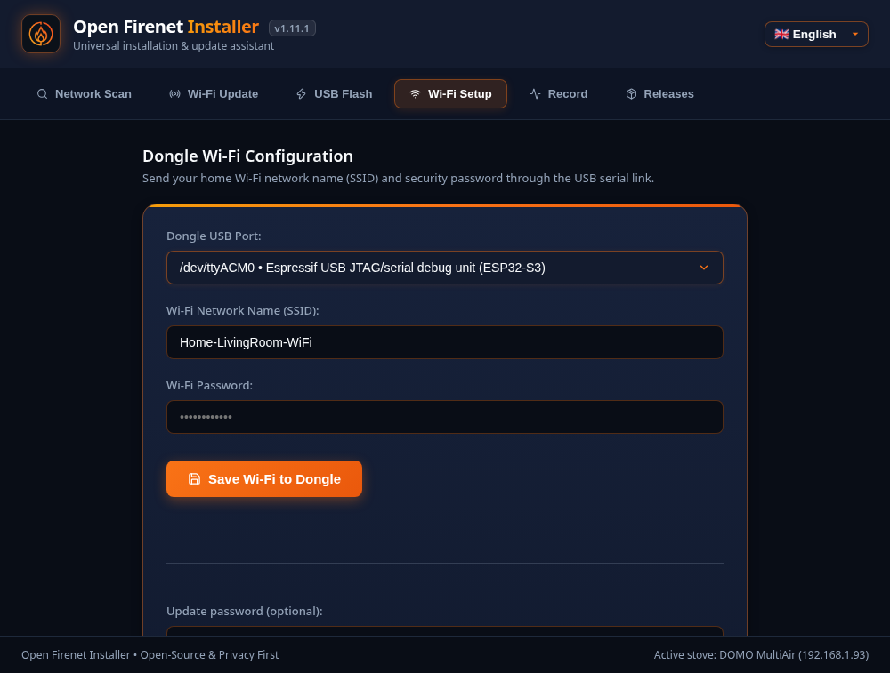

Per iniziare
Da una scheda vergine al controllo completo della stufa dal browser in cinque passaggi.
-
Verificate la versione del firmware della stufa
Sul display della stufa, aprite il menu Info e leggete la versione software della scheda madre (ad esempio 2.27 o 2.29). Verificatela poi nella pagina di compatibilità.
-
Procuratevi l'hardware
Sono necessari due componenti:
- Una scheda di sviluppo ESP32-S3 con USB nativo. Il chip deve essere obbligatoriamente un ESP32-S3: un ESP32 classico, un ESP32-C3 o una scheda dotata solo di un convertitore USB-UART (CH340, CP2102) non funzionerà.
- Un cavo dati USB per collegare la scheda alla presa USB-A della stufa. I cavi di sola ricarica privi di linee dati non funzionano.
Per la scelta della scheda e i modelli sicuramente compatibili: consultate la pagina Hardware.
Schede con due porte USB: la stufa deve essere obbligatoriamente collegata alla porta contrassegnata con „USB“ o „USB OTG“ (connessa ai pin USB nativi del chip). La porta contrassegnata con „UART“ o „COM“ serve unicamente per il flash iniziale e i log. Si tratta dell'errore più comune.
-
Installate il firmware con l'installer
Scaricate l'installer per il vostro computer dalla pagina dei rilasci e collegate la scheda al computer. L'installer rileva la scheda, la legge e preimposta Prima installazione nella scheda Flash USB. Scarica l'ultimo firmware ufficiale, ne verifica la firma digitale, lo scrive sulla scheda e vi guida alla configurazione Wi-Fi.

Sistema File Windows open-firenet-installer-windows-x86_64.exemacOS (Apple Silicon) open-firenet-installer-macos-arm64macOS (Intel) open-firenet-installer-macos-x86_64Linux open-firenet-installer-linux-x86_64.AppImageo pacchetto.debIl computer potrebbe mostrare un avviso al primo avvio. L'installer non è firmato con un certificato per sviluppatori commerciale a pagamento, pertanto Windows e macOS non lo riconoscono a priori. È del tutto normale.
- Windows: schermata blu „PC protetto da Windows“ (Microsoft Defender SmartScreen). Fate clic su Ulteriori informazioni, quindi su Esegui comunque.
- macOS: il file è un normale programma eseguibile. Nel Terminale, rendetelo eseguibile con
chmod +xseguito dal nome del file e avviatelo. Se macOS impedisce l'apertura, andate in Impostazioni di Sistema > Privacy e sicurezza e selezionate Apri comunque.
Per verificare l'integrità del file scaricato, confrontate il relativo hash SHA-256 con il file
SHA256SUMSfornito a ogni rilascio.Su Linux, il vostro utente deve appartenere al gruppo
dialout(ouucp) per poter accedere alle porte seriali USB. Se la scheda non viene rilevata, tenete premuto il tasto BOOT mentre la collegate via USB. -
Collegate il bridge alla rete Wi-Fi
Inserite nome della rete (SSID) e password nella scheda Configurazione Wi-Fi dell'installer, oppure procedete direttamente dallo smartphone:
- Connettetevi alla rete Wi-Fi temporanea
Open-Firenet-Setupgenerata dalla scheda (senza password). - La schermata di configurazione si aprirà automaticamente. In caso contrario, aprite il browser all'indirizzo
http://192.168.4.1. - Selezionate la rete Wi-Fi di casa (frequenza 2,4 GHz), inserite la password e salvate. La scheda si riavvierà collegandosi alla vostra rete.

- Connettetevi alla rete Wi-Fi temporanea
-
Collegate la scheda alla stufa
Collegate la porta USB nativa della scheda alla presa USB della stufa, quindi spegnete e riaccendete la stufa tramite l'interruttore generale di alimentazione. Dopo circa un minuto, aprite nel browser
http://open-firenet.local(oppure l'indirizzo IP rilevato nella scheda Scansione di rete dell'installer).La pagina mostrerà il modello della stufa e il suo stato operativo. La navigazione è suddivisa in tre schede: Stufa (cruscotto e controlli diretti), Bridge (Wi-Fi, MQTT, riavvio) e Diagnostica (comunicazione con la stufa, registro eventi, tutti i valori). Se compare un avviso indicante che il bridge non è collegato alla stufa, consultate la guida di Risoluzione problemi.
Aggiornamenti successivi
Una volta integrato il bridge nella rete locale, la scheda Aggiornamento Wi-Fi dell'installer consente di installare le nuove versioni del firmware senza dover scollegare alcun cavo. Il computer e il bridge devono trovarsi sulla stessa rete locale; in caso di timeout, verificate i requisiti di rete.
Opzionale a partire dal firmware 4.0: potete proteggere gli aggiornamenti wireless con una password. Collegate il bridge al computer, aprite la scheda Wi-Fi dell'installer e impostate una „Password di aggiornamento“. L'installer la richiederà a ogni aggiornamento over-the-air.

Passaggi successivi
Home Assistant
Aggiungete la stufa come termostato completo con tutti i suoi sensori.